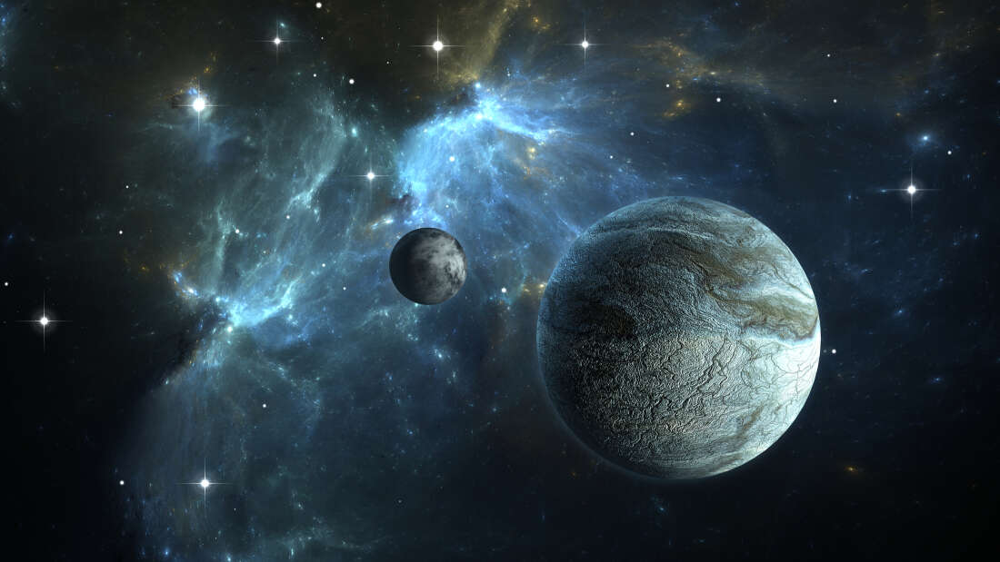

PELA PRIMEIRA VEZ ALGORITMO DE MACHINE LEARNING CONFIRMA A EXISTÊNCIA DE 50 NOVOS EXOPLANETAS
Cinquenta potenciais planetas tiveram sua existência confirmada por um novo algoritmo de machine learning desenvolvido por pesquisadores da Universidade de Warwick.
Pela primeira vez, os astrônomos usaram um processo baseado em machine learning, uma forma de inteligência artificial, para analisar uma amostra de potenciais planetas e determinar quais deles são reais, falsos, ou falsos positivos, calculando a probabilidade de cada candidato de ser um verdadeiro exoplaneta.
Os resultados foram divulgados num artigo publicado no Monthly Notices of the Royal Astronomical Society, onde eles também realizaram a primeira comparação de grande escala dessa técnica de validação de planetas. Nas conclusões do trabalho os pesquisadores indicam usar múltiplas técnicas de validação, incluindo o algoritmo de machine learning que eles desenvolveram para confirmar estatisticamente as futuras descobertas de exoplanetas.
Muitas pesquisas de exoplanetas usam uma grande quantidade de dados adquiridos por telescópios buscando por sinais de planetas que passam entre o telescópio e a estrela, numa técnica conhecida como trânsito. Quando o trânsito acontece, a luz da estrela sofre uma variação, e um candidato a exoplaneta é detectado. Esse candidato passa depois por observações de confirmação. O grande problema é que essa queda no brilho da luz da estrela pode ser causada por outros fatores, como uma estrela companheira, uma anã marrom, variações da própria estrela, e até mesmo erros instrumentais. Esses falsos positivos precisam ser eliminados, para que se tenha somente os candidatos a exoplanetas. Fazer isso manualmente é algo custoso, e por isso, a detecção de exoplanetas é um caso clássico na astronomia de aplicação de machine learning.

Os pesquisadores do Departamento de Física e Ciência Computacional da Universidade de Warwick, bem como do Instituto Alan Turing, construíram um algoritmo de machine learning que era capaz de separar os planetas reais dos falsos numa grande amostra de milhares de candidatos encontrados pelas missões TESS e Kepler da NASA.
Os pesquisadores primeiro treinaram o algoritmo para reconhecer planetas reais usando duas grandes amostras de planetas confirmados e de falsos positivos também confirmados retirados da missão Kepler da NASA. Os pesquisadores então usaram o algoritmo numa base de dados de candidatos planetários ainda não confirmados do Kepler, resultando em 50 novos planetas confirmados e os primeiros a serem validados por uma técnica de machine learning. Técnicas anteriores de machine learning já foram usadas para ranquear os candidatos, mas nunca foram usadas até então para determinar a probabilidade que um candidato tinha de ser realmente um planeta, um passo importante para a confirmação de um planeta.
Esses 50 novas planetas possuem tamanho maiores que Netuno até alguns menores que a Terra, com órbitas que variam de 200 dias até um dia. Confirmando esses 50 planetas como sendo reais, os astrônomos agora podem priorizar esses objetos nas observações que precisam ser feitas para a confirmação final.
O Dr. David Armstrong, do Departamento de Física da Universidade de Warwick, disse: “O algoritmo que nós desenvolvemos nos deu 50 candidatos para que possam passar para o processo de validação e então serem confirmados como planetas reais.
Esperamos aplicar essa nova técnica a uma grande amostra de candidatos detectados pela sonda TESS e pela futura missão PLATO”.
“Em termos de validação de planeta, ninguém até agora usou técnicas de machine learning. O machine learning sempre foi usado para ranquear os candidatos planetários, mas nunca numa abordagem probabilístico, que é o que nós usamos para validar verdadeiramente um planeta. Além de dizer quais candidatos podem ser planetas, nós podemos dizer qual a probabilidade dessa confirmação. Como existe uma chance menor do que 1% de um candidato ser um falso positivo, eles podem ser considerados planetas validados”.
O Dr. Theo Damoulas do Departamento de Ciência Computacional da Universidade de Warwick, e diretor do Data Centric Engineering, e também um Turing Fellow no Instituto The Alan Turing, disse: “Abordagens probabilísticas para técnicas estatísticas de machine learning são especiais para um problema como esse na astrofísica, que precisa incorporar um conhecimento a priori – de especialistas como o Dr. Armstrong – e quantificar as incertezas nas predições. Esse é um belo exemplo quando adicionar uma complexidade computacional de métodos probabilísticos realmente tem sua compensação”.
Uma vez que se constróis e treina o algoritmo é bem mais rápido fazer essa detecção do que as técnicas existentes e todo o processo pode ser completamente automatizado, fazendo dessas técnicas de machine learning, ideais para analisar potencialmente milhares de candidatos planetários observados em pesquisas atuais feitas pela sonda TESS. Os pesquisadores defendem que essa deve ser uma das ferramentas usada de forma coletiva para validar os exoplanetas no futuro.

O Dr. Armstrong, adiciona: “Quase 30% dos exoplanetas conhecidos até o momento foram validados usando apenas um método, o que não é o ideal. Desenvolver novos métodos para validação é algo muito desejável atualmente. Além disso, as técnicas de machine learning também ajudam a definir rapidamente quais são os planetas e então priorizar a confirmação”.
“Nós ainda precisamos gastar um tempo treinando o algoritmo, mas uma vez que isso é feito isso fica muito mais fácil de se fazer no futuro. É possível também incorporar novas descobertas e melhorar de forma progressiva o algoritmo”.
“Uma pesquisa como a TESS deve ter dezenas de milhares de candidatos planetários e é ideal se ter uma maneira de analisar todos esses dados de forma consistente. Sistemas rápidos e automáticos como esse que podem nos dar uma maneira de validar os planetas em poucas etapas, podem nos ajudar a fazer todo esse trabalho de forma mais eficiente”, e assim é possível descobrir mais rapidamente exoplanetas no nosso universo.
Fonte:
https://warwick.ac.uk/newsandevents/pressreleases/fifty_new_planets
https://arxiv.org/pdf/2008.10516.pdf